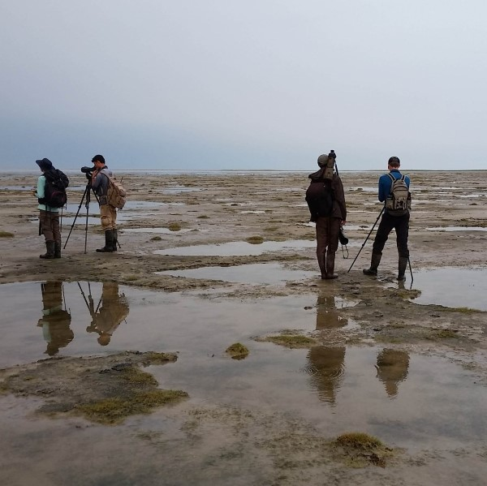
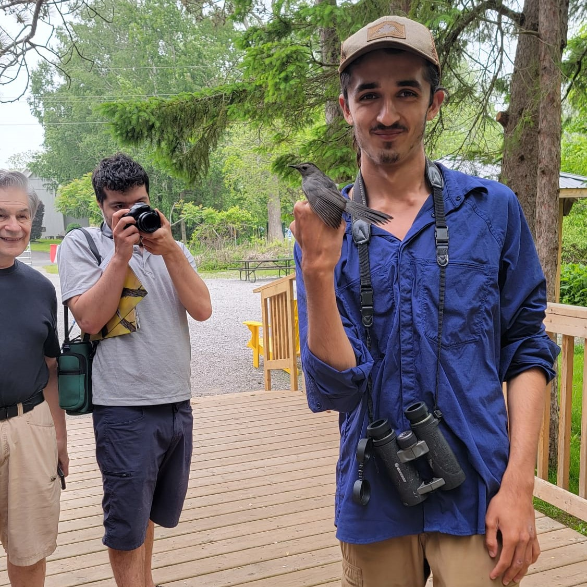
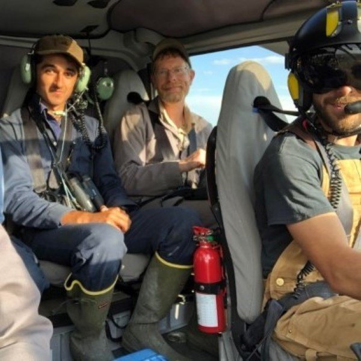

About me
I am now entering my second year of a Master's program in the Statistics department at the University of British Columbia. My current work is on hidden Markov model methods for time-series inference, using parallel-in-time algorithms and GPU computation. I am applying this to modelling whale movement in the Canadian Arctic, and I just returned from four weeks in the field with Fisheries and Oceans Canada tagging narwhal in Arctic Bay, Nunavut. Although my goal has always been to answer biological questions, I took a slight detour through a B.Sc. Honours degree in pure mathematics at UBC. I still managed to get out in the field (including a year volunteering at research stations in Ecuador and a summer working for the Ontario Ministry of Natural Resources in the sub-arctic), but my school terms consisted of the likes of functional analysis, stochastic processes, and abstract algebra. In 2023 I began working in the Irwin Zoology lab at UBC doing research on a computer model of a two species hybrid zone. The paper resulting from that work has been making its way through a long and arduous review process, but a preprint can be viewed here.
I am passionate about science and I've loved nature for as long as I can remember. I spend much of my spare time out in nature documenting birds, moths, dragonflies, and anything else I can find. My dream is to one day turn my passion into a career in research. I'm particularly interested in how mathematics, statistics, and computer modeling can be used to study processes in evolutionary biology and ecology. To see some of my latest finds check out my eBird and iNaturalist profiles or read my blog to get up to date on my latest adventures.